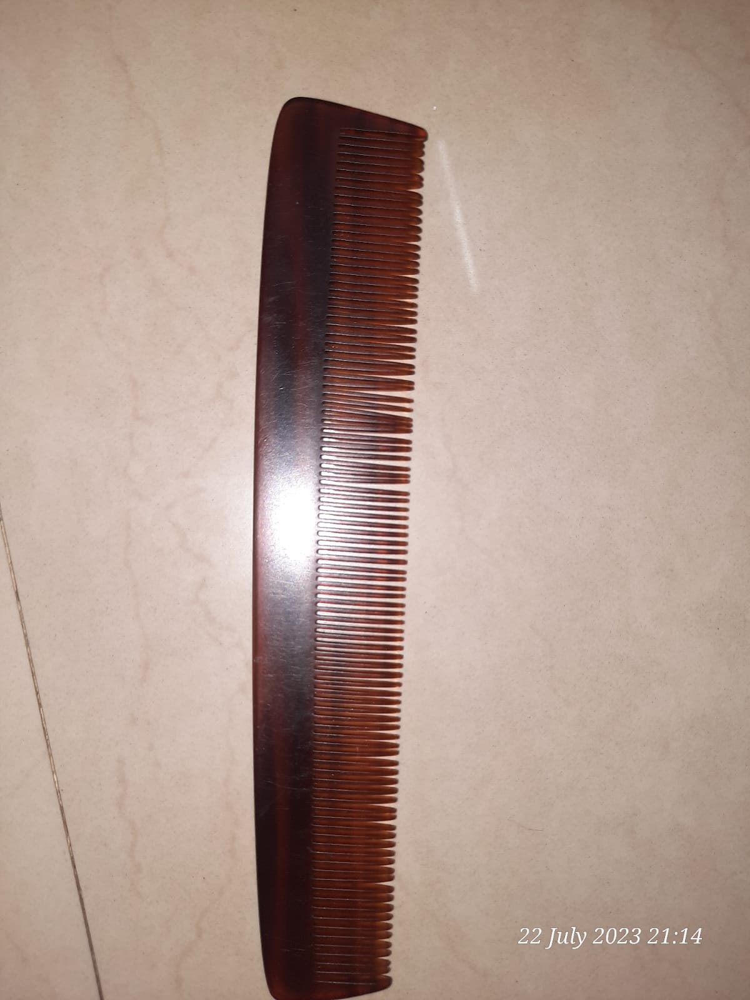
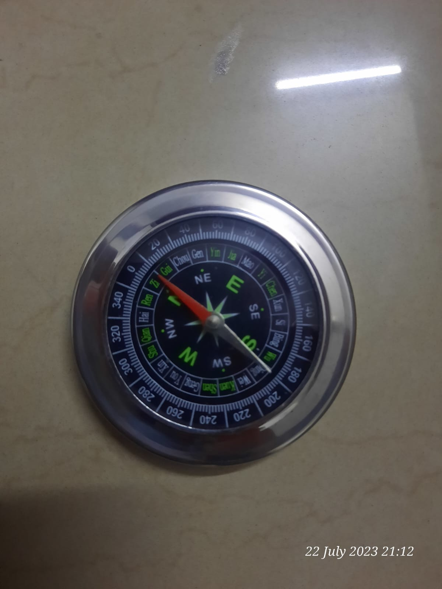
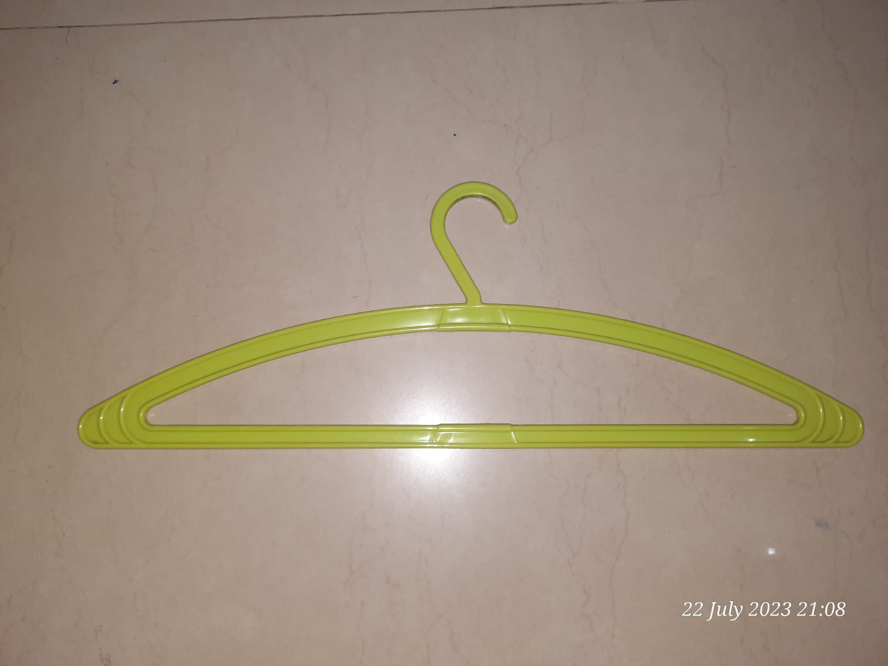
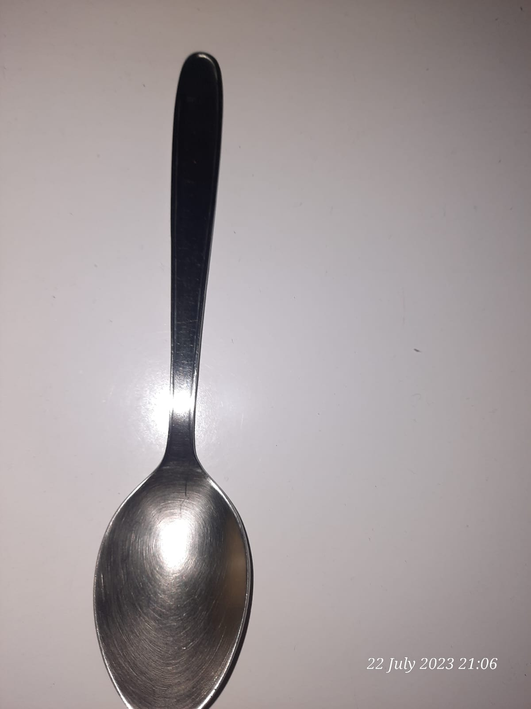
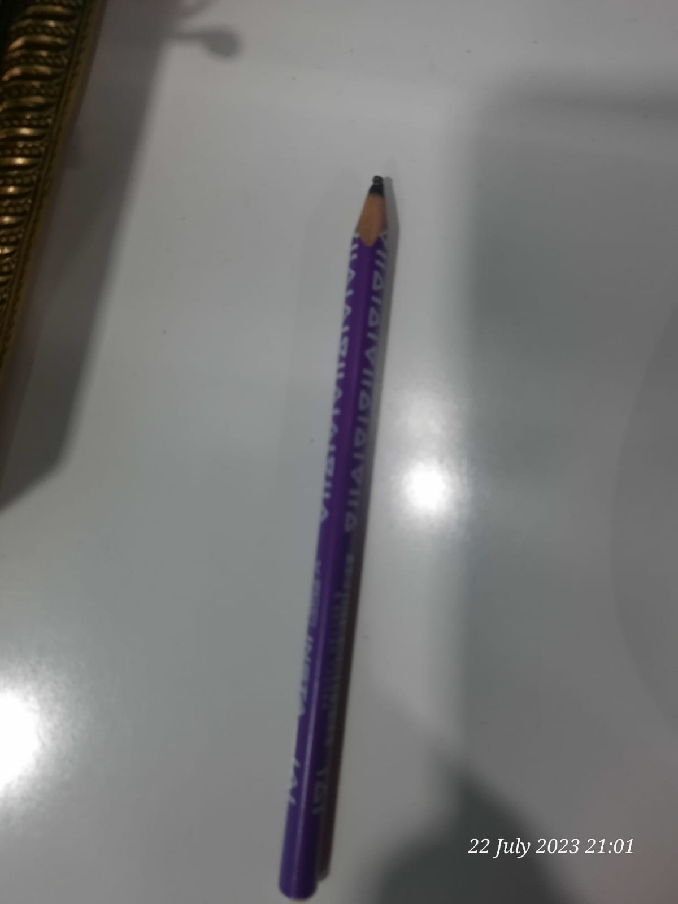
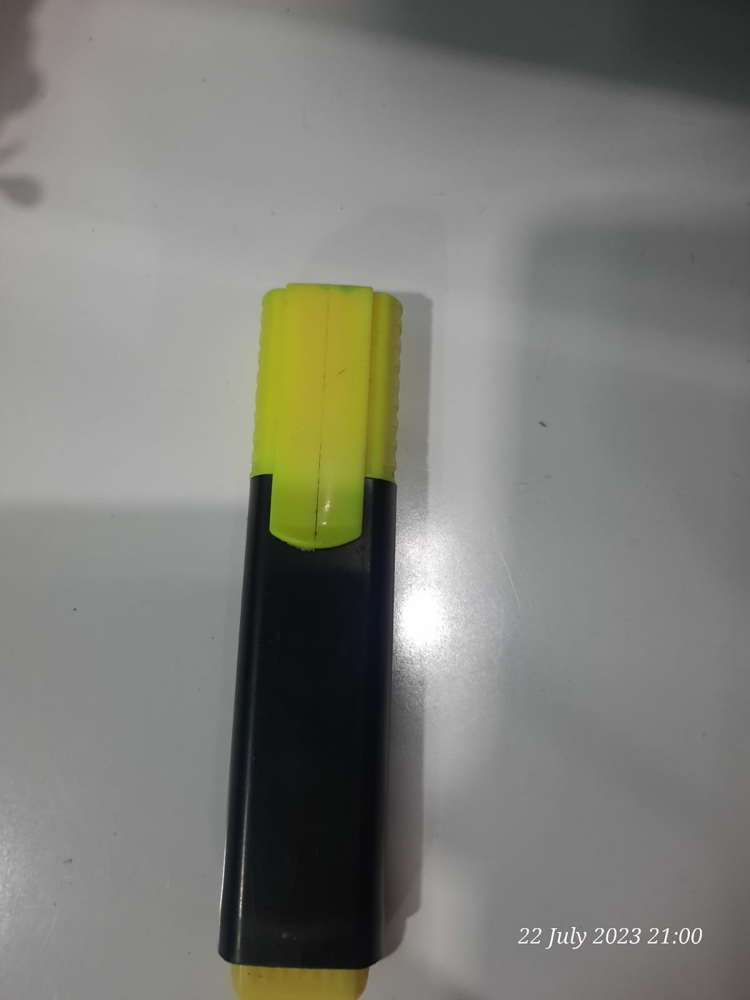
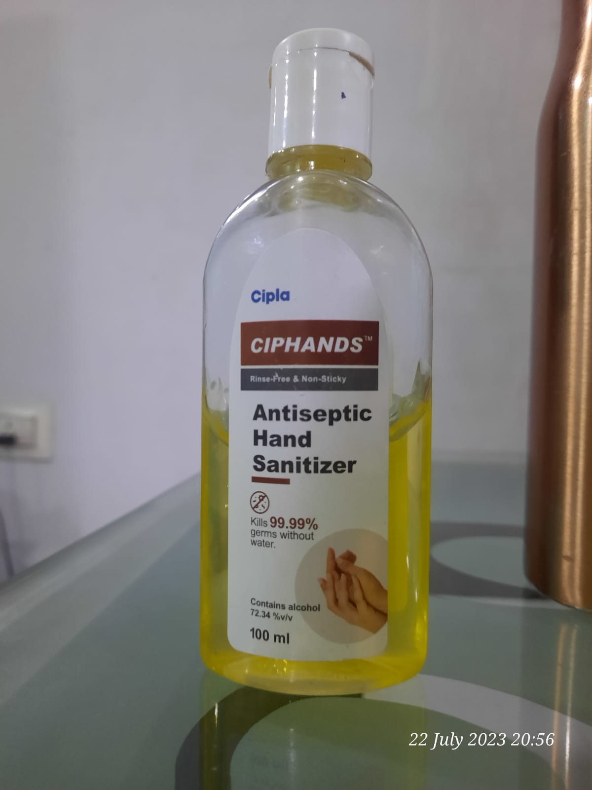
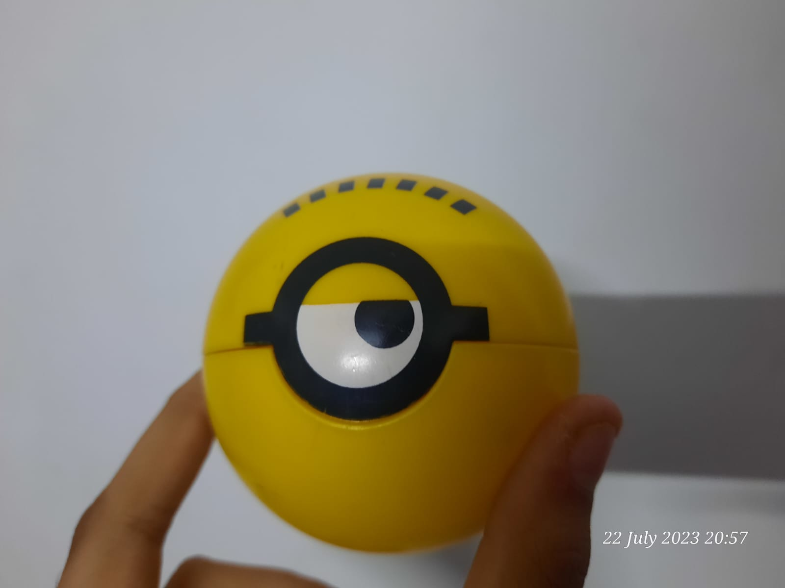

<
Test Image -

Output on GOOGLE LENS - Comb
Output on Mobilenet Model - Hairbrush
Result - GOOGLE LENS is more accurate
Test Image -

Output on GOOGLE LENS - Compass
Output on Mobilenet Model - Compass
Result - Both GOOGLE LENS and Mobile Net model are correct
Test Image -

Output on GOOGLE LENS - Hanger
Output on Mobilenet Model - hanger
Result - Both GOOGLE LENS and Mobile Net model are correct
Test Image -

Output on GOOGLE LENS - Spoon
Output on Mobilenet Model - spoon
Result - Both GOOGLE LENS and Mobile Net model are correct
Test Image -

Output on GOOGLE LENS - Pencil
Output on Mobilenet Model - stick
Result - GOOGLE LENS is more accurate
Test Image -
Output on GOOGLE LENS - Fork
Output on Mobilenet Model - fork
Result -Both GOOGLE LENS and Mobile Net model are correct
Test Image -

Output on GOOGLE LENS - Highlighter
Output on Mobilenet Model - marker
Result -GOOGLE LENS is more accurate
Test Image -

Output on GOOGLE LENS -Sanitizer
Output on Mobilenet Model - disinfectant
Result - GOOGLE LENS is more accurate
Test Image -

Output on GOOGLE LENS -Ball
Output on Mobilenet Model - toy
Result - GOOGLE LENS is more accurate